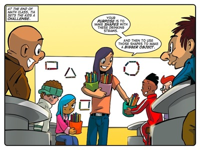
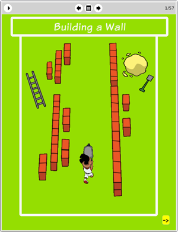

Story: The Last Straw
Theme: Thinking with a purpose.
Synopsis
Tia sets her class a prize-earning challenge to build something out of drinking straws. Farrah has ambitious plans to make something complicated and beautiful and Tom prioritises durability. They decide to work together. Jojo envisions a series of replicas of sporting equipment that he could sell. Sophie is drawn to his scheme because she believes it will entail lots of research pertaining to the performance of the equipment his models resemble. They also decide to work together.
Farrah and Tom start working immediately. Their purpose is clear and it directs their actions. They want to make a beautiful, durable structure. Jojo's purpose is also clearly defined. He wants to make sport equipment replicas to sell for cash. Sophie wants to do research, which would be fine if she intended to feed her research into the exercise of building a structure out of straws. But when she researches through the night and spends no time helping Jojo build, the two end up in a fight.
The story demonstrates the importance of thinking with a purpose by showing what happens when you deviate from your purpose – even just a little. Sophie's love of research is often useful in achieving her goals but this time she and Jojo just needed to knuckle down and get building. She lost sight of her purpose and did what she liked to do instead of working towards her goal and doing what she had to do to build her structure in time for the deadline the following day.
Note that some preparation was useful to Tom and Farrah. However, they spent only a short time thinking through some structural principles and they made a sketch to make their statue. They realised that this was a practical assignment, where the point of the exercise was to spend time building.
Activity
This activity challenges learners to build base shapes – a triangle, a square, a hexagon and a pentagon – and then to use these base shapes to build pyramids and prisms.
The purpose of the activity is to lay a physical foundation in the learners minds for the nature of three-dimensional shapes. We want them to internalise and get a feeling for how these shapes occupy space. We also want learners to recognise the modular nature of three-dimensional shapes.

The eToys project: Building a
WallIn this project Tom shows learners how to script an object to build a wall in eToys. The project has a clear purpose: to build a wall. Tom takes learners through a process of analysis to construct scripts that will control a “Jojo bot” to build the wall.